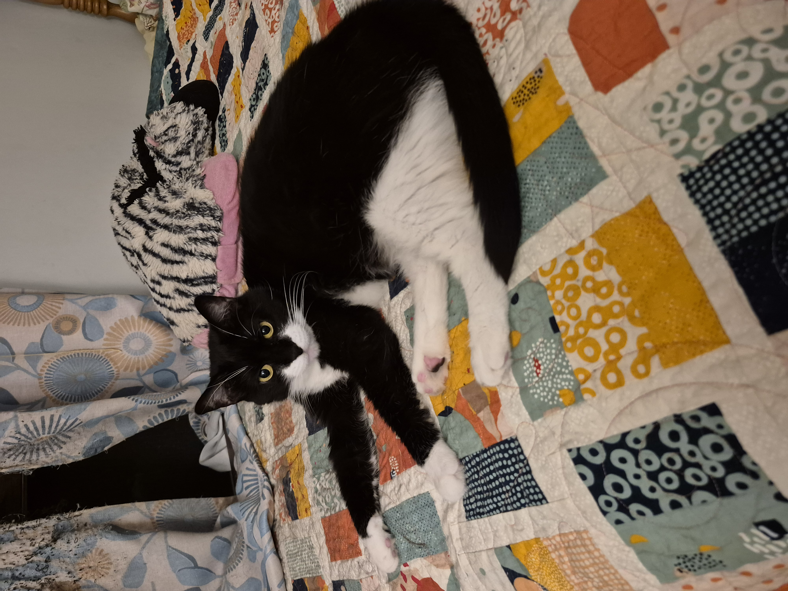

Hello, I am Antony! I love cats. They are my favorite animal. Click on this link for a surprise.
Cats are amazing because they like to snuggle and are low maintenance. (Most of the time :0) Here is one of my favorite websites called Internet Archive. Internet Archive is a website that archives and gives people access to many different types of media. It is awesome.
I made a project recently for DIGIT 100 called Dear Data
where I recorded data throughout the week and visualized it in a drawing.
Here are all of the classes that I am taking this semester.
I also have a cat named Ripley. She is a tuxedo cat and she is chubby. She is my baby. I like to annoy her by picking her up.
